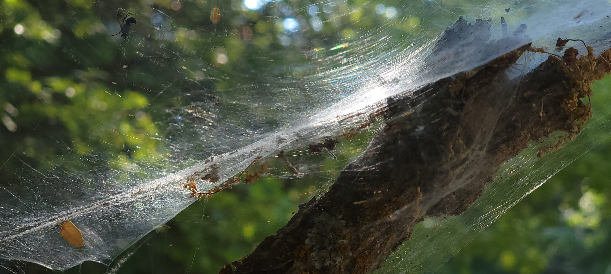
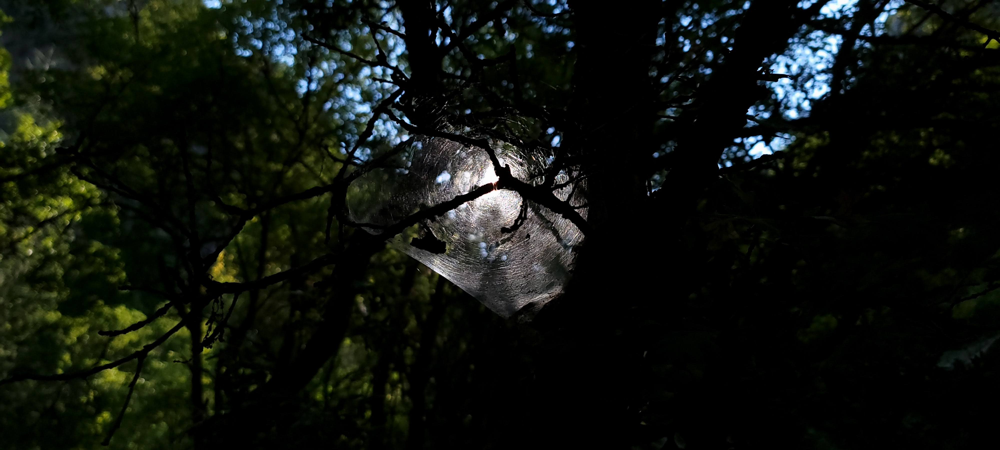
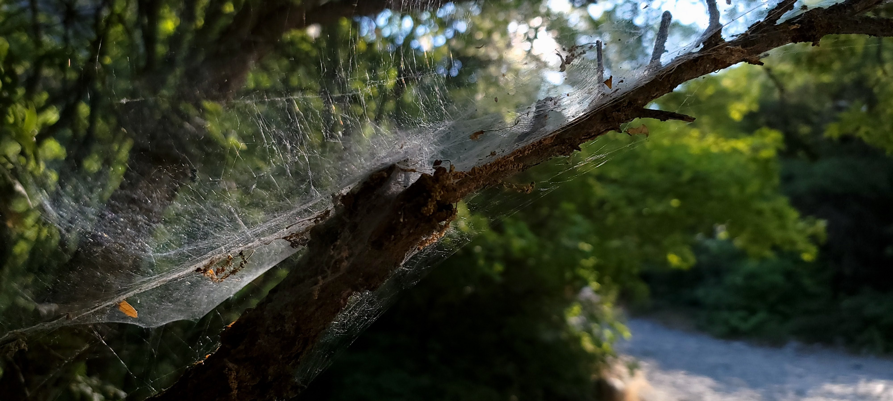

My body said,
Today’s a holiday, take a break.
Mind over ruled it.
Soon I was back on a familiar terrain. Dusty, graveled trail that leads to places like; The Kitchen, Elephant Rock, The Wild and the First Bridge.
The stiff breeze, though no longer chilly, awakened me.
Sister K and I talked about what we learned and felt, since we last talked, about 12 hours ago. Also talked about past gains and lessons, trying to fill in the dates, as far as our memories allowed.
0.6 miles - The Kitchen
The breeze continues to lead us up the canyon. Expecting more hikers than normal.
Professor H is already descending. Exchange our knowledge of 1847 era.
He informs that Shoshone controlled lands north of SLC. The Utes controlled land south of Lehi and Utah County.
Salt Lake City was the DMZ1 of that period.
Shared what I learned about the Treaty of Hidalgo2
0.8 miles - The Elephant Rock
Terry and Marvin are on their way home. Marvin notices that I am not carrying the DSLR.
You must have exhausted all of the shots of the canyon.
Nod in agreement – proved myself wrong later.
Grant was by the seasonal, “fountain of youth”.
Normally this where we turnaround.
Since there are no morning commitments today, we continued
1.5 miles - First Bridge
Meet Kate, she is gliding down the trail effortlessly Ask if the water is still flowing.
Affirmative, near the 2nd Bridge.
We continue on.
1.7 miles - 2nd Bridge
Confirmed that the water is flowing around the damaged 2nd Bridge. The sun is illuminating the whole canyon.
Then I notice spider webs. The sun rays are highlighting them.
Spend next hour or taking close up photos.

One F-Stop Enough
A few months back, discovered the Aperture Mode of DSLRs and the Pro-Mode of Android Phones.
Have known the theory of limiting the light, however, never took time to implement it.
Also, instead of letting the camera choose, the “optimal” photo, I have an input.
The resulting photos seem more cinematic, almost dreamlike.
I may go back to the Auto Mode someday, but for now, I plan to take the extra minute or so and see the result in the Pro/Aperture Mode.

Music/Sound Analogy
Remember those days when I thought the music sounded better when it was played loudly. Also reading about influential reviewers that praised and pushed new products aimed at wannna be audiophiles.
Now that I have acquired a fair portion of those so-called audiophile-grade products, my view has shifted.
No longer searching for optimal sound derived from optimal equipment.
Instead, setting the volume at a level that allows me to distinguish different levels in a Quintet.
Like Piano Quintet in A major, D. 667, by Franz Schubert.
As one ages, the marvel of sound generation and sound detection by humans far surpasses the technical achievements of audio production and storage of major manufacturers.
Remember the words of Sister K’s younger cousin, who stated back in the end of last century.
It is hard for me to distinguish a sound from a college student’s stereo versus the so-called hi-end products.
I think he was proven to be correct.
.
Analogies in Contemporary Life
It seems, nearly anyone can express one’s opinion or knowledge on endless variety of topics. And its ubiquitous offering can be accessed, viewed, or listened nearly effortlessly.
Like the Auto-Mode of cameras.
It analyzes the surroundings and decides what is the optimal decision for us.
However, though more work, there are filters and mechanical light limiters one can employ to limit the ‘light’ or the amount of information we consume as well as clarify.
As well a medium we refer to as the Holy Ghost.
As we strive to stay on the path that leads to eternal life, the Holy Ghost can guide us in our decisions and protect us from physical and spiritual danger. Through Him, we can receive gifts of the Spirit for our benefit and for the benefit of those we love and serve. He is the Comforter.3
Back at the “Fountain of Youth”
As we were drinking water for the trek home, a lady remarked
한국분이세요
Yes we are.
Turns out she is from 구미, where I worked during out Korea stay. She also knows many of our friends in 대구. Her daughter served in the Korea Seoul South Mission.
Bid farewell and we continued our walk home Occasionally stopping to capture more photos in the non Auto-Mode.
Footnotes
de militarized zone↩︎
The Treaty of Guadalupe Hidalgo was signed on February 2, 1848, in the Mexican city of Guadalupe Hidalgo, ending the Mexican-American War (1846–1848). The treaty’s terms included: Cession of territory Mexico gave up 55% of its territory, including California, Nevada, Utah, most of Arizona and Colorado, New Mexico, and parts of Oklahoma, Kansas, and Wyoming. The U.S. also gained Texas and the Rio Grande as its southern boundary. AI Overview↩︎
https://www.churchofjesuschrist.org/study/manual/gospel-topics/holy-ghost?lang=eng↩︎